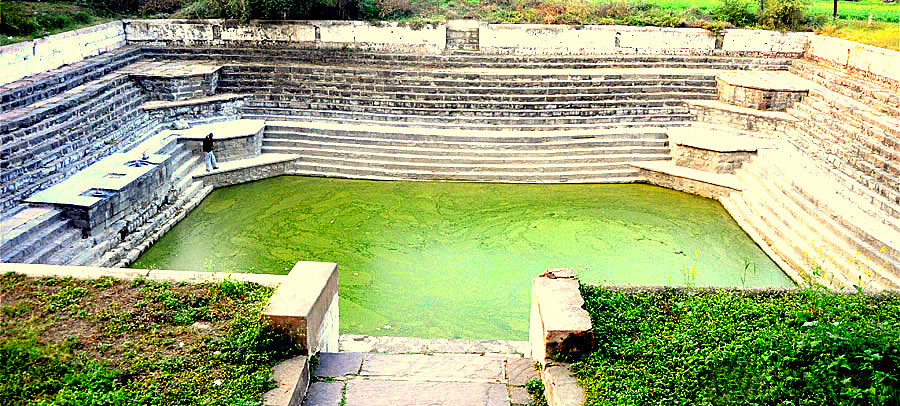
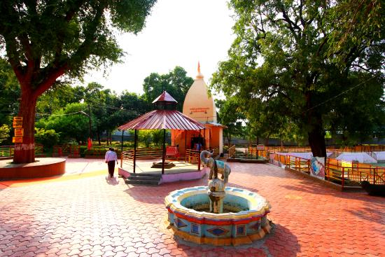

अंकपात क्षेत्र में स्थित इस आश्रम में भगवान श्रीकृष्ण-सुदामा और बलरामजी ने अपने गुरु श्री सांदीपनि ऋषि के सान्निध्य में रहकर गुरुकुल परंपरानुसार विद्याध्ययन कर
14 विद्याएं तथा 64 कलाएं सीखी थीं। उस काल में तक्षशिला और नालंदा की तरह उज्जैन (अवन्तिका) भी ज्ञान-विज्ञान और संस्कृति का सुप्रसिद्ध केंद्र था।

ऐसा कहा जाता है कि भगवान श्रीकृष्ण यहां स्लेट पर लिखे अंक धोकर मिटाते थे इसलिए ही इस क्षेत्र का नाम अंकपात पड़ा।
श्रीमद्भागवत, महाभारत तथा कई अन्य पुराणों में यहां का वर्णन है। यहां पर स्थित कुंड में भगवान श्रीकृष्ण ने अपने गुरुजी को स्नानार्थ गोमती नदी
का जल उपलब्ध करवाया था अतएव यह सरोवर गोमती कुंड कहलाया। यहां पर स्थित मंदिर में श्रीकृष्ण, बलराम तथा सुदामाजी की सुंदर मूर्तियां हैं।

महर्षि सांदीपनि के वंशज अभी भी उज्जैन में निवास करते हैं तथा प्रख्यात ज्योतिर्विद के रूप में जाने जाते हैं। इसी अंकपात क्षेत्र में सिंहस्थ महाकुंभ का मेला लगता है
तथा यह ऐतिहासिक एवं पुरातात्विक दृष्टिकोण से भी काफी महत्वपूर्ण स्थान है।